Visual Studio Code es un editor de código fuente desarrollado por Microsoft para Windows, Linux y macOS. Incluye soporte para la depuración, control integrado de Git, resaltado de sintaxis, finalización inteligente de código, fragmentos y refactorización de código.
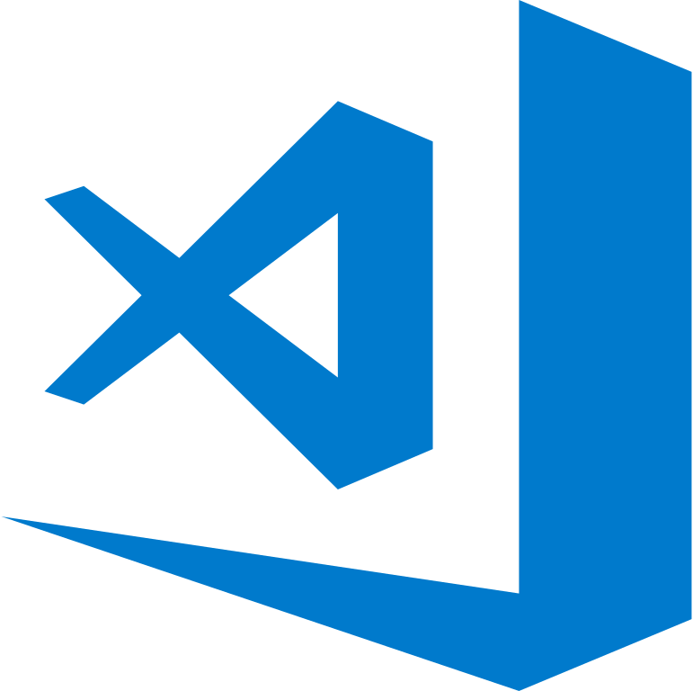Nos dirigimos a nuestro buscador y ponemos Visual Studio Code.En los resultados, clickamos en Download Visual Studio Code.
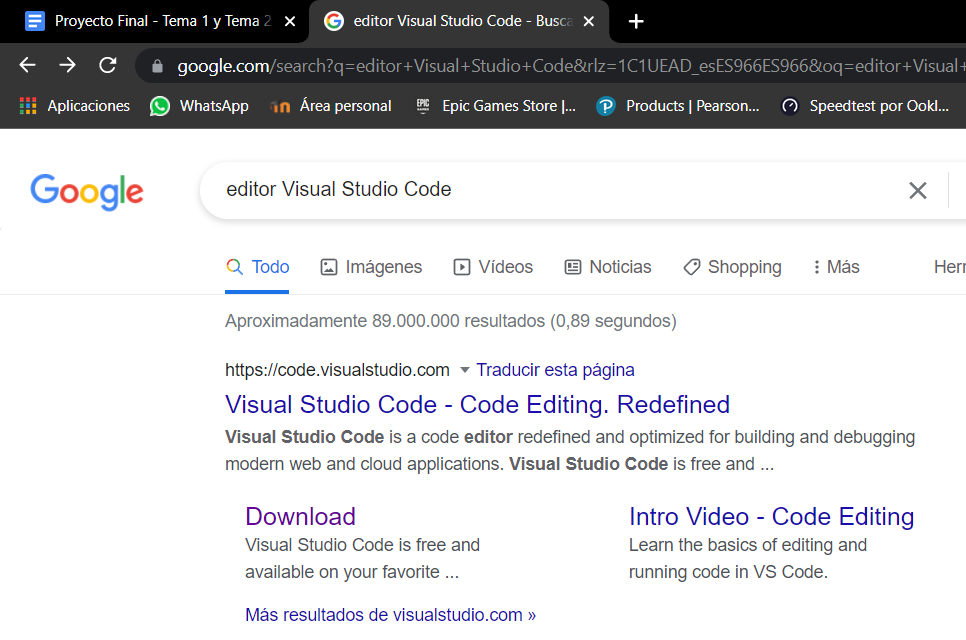Nos cargará una pantalla como la de la siguiente captura. En mi caso, como mi sistema operativo es 64 bits, lo seleccionare . Si el sistema operativo donde se instale es 32 bits, habría que seleccionar la versión correspondiente.
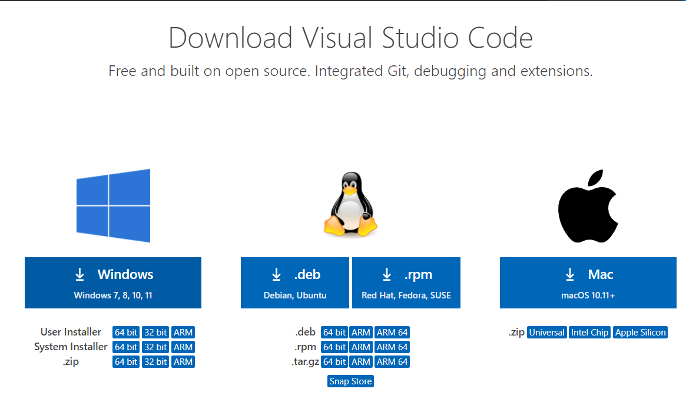Una vez finalizada la descarga , podemos pulsar sobre el ejecutable para comenzar la instalación
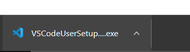Ahora deberemos leer el contrato y pulsaremos sobre aceptar para poder usarlo.
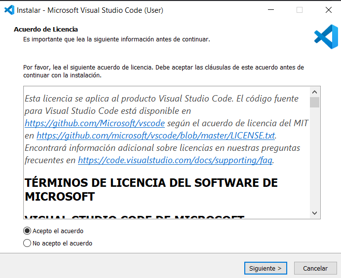A continuación nos pregunta en que ruta queremos instalar el programa , en mi caso yo dejare la ruta predeterminada. Una vez decidido pulsa sobre siguiente
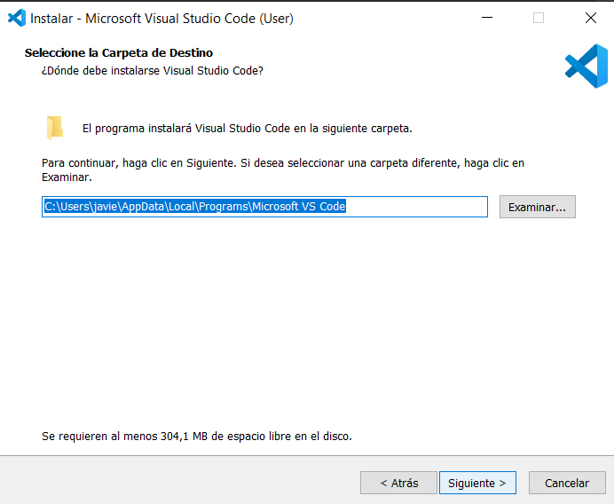Ahora nos pedira donde debe crear el acceso directo ,aunque podemos marcar la casilla de abajo para que no nos cree ninguno.
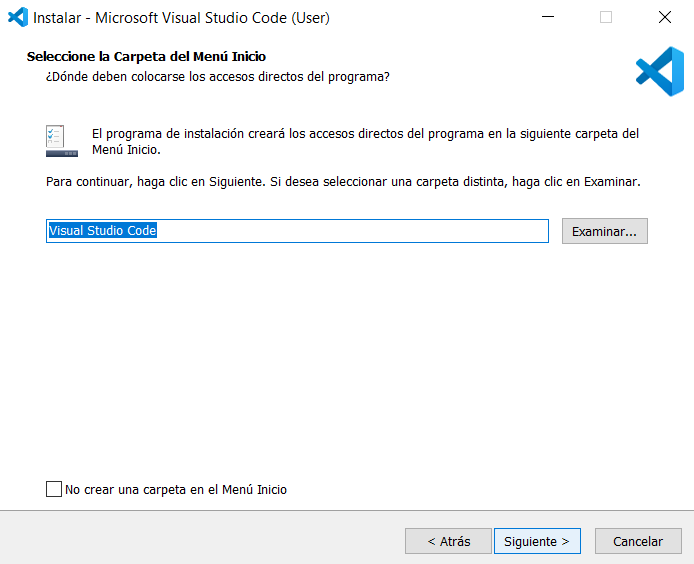Ahora deberemos seleccionar las opciones que nos interesen en mi caso , solo selecionare que me cree un acceso directo en mi escritorio
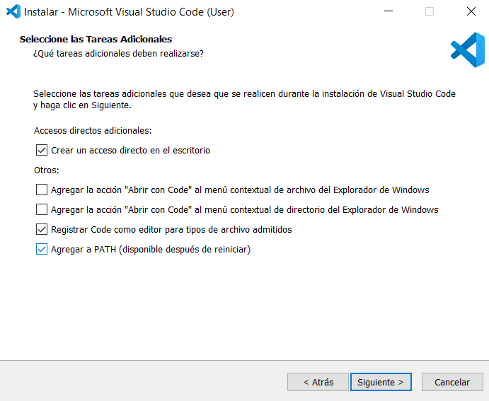Ahroa nos mostrara un resumen de todo lo que hemos seleccionado anteriormente , si esta correcto le damos a instalar.
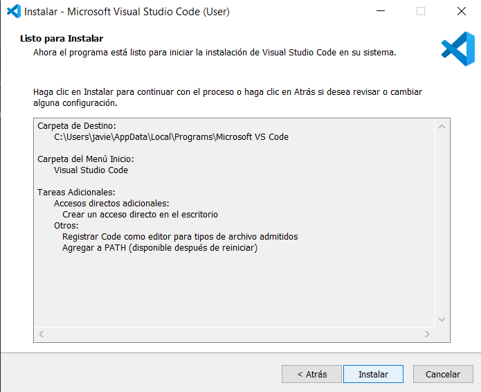Ahora solo deberemos esperar a que se instale.
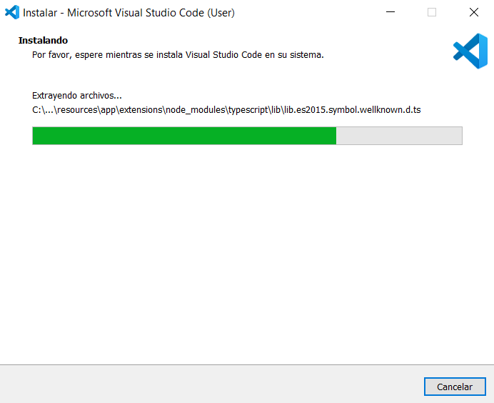Una vez finalizado , nos lo avisara . Y nos dara opcion a iniciarlo al cerrar el instalador
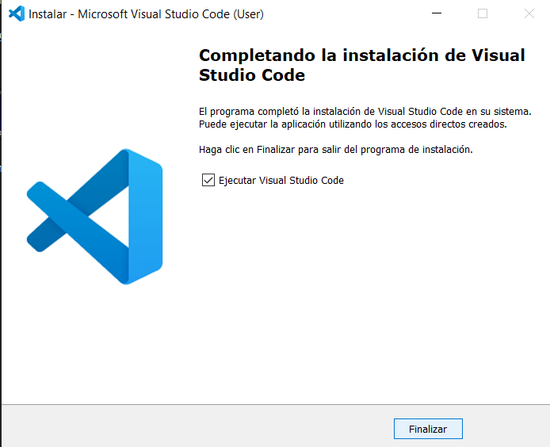Con esto ya abriamos acabado la instalación.Si queremos poner el programa en Español nada mas abirilo abajo a la derecha nos dara la opción para instalar el paquete de idiomas
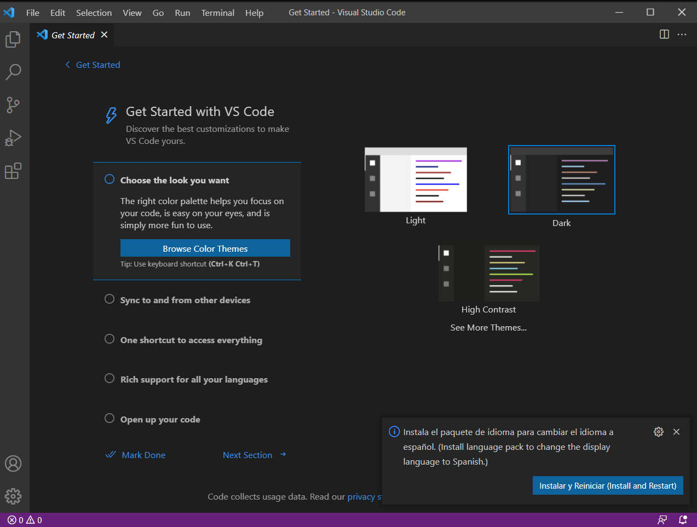Para mi este editor es muy util ya que esta disponible en cualquier pataflorma y soporta varios lenguajes de programación